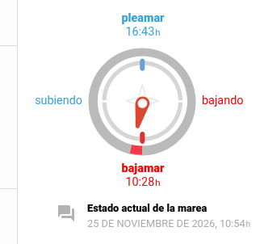
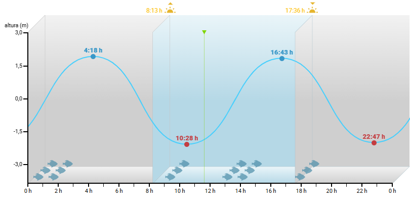
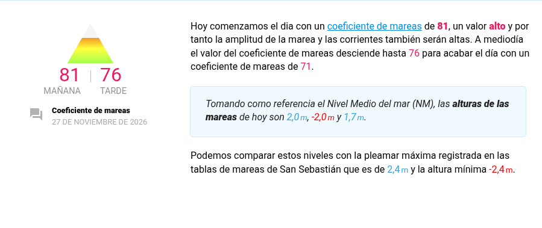
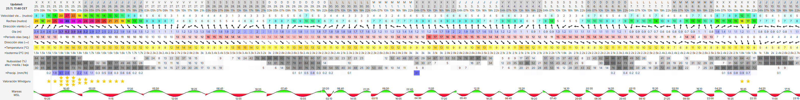
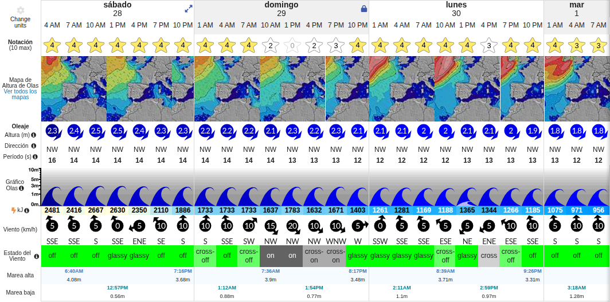

DONOSTIA · MAR Y SURF
MeteoMario
Cargando última actualización…
Webcams en directo
EN DIRECTOZurriola
Mareas
San Sebastián


Viento y mar
Windguru · Zurriola
Previsión de surf
Zurriola
DONOSTIA · MAR Y SURF
Cargando última actualización…




